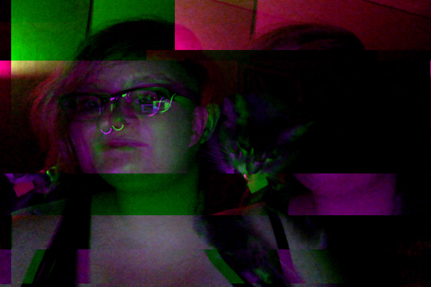

about
Hi! I’m kf, a coding-inclined, cat-inclined twenty-something.

Currently, I work as a data engineer at Simple in Portland, OR. Previously, I worked on distributed systems at Comcast in Philly and as a freelance Scala developer for startups in San Francisco.
I’ve spent most of my time in industry working remotely, and I have a penchant for functional programming. I’ve taught workshops on Scala and Clojure, as well as given conference talks on developer workflows and community organizing.
In my spare time, I’ve been on the boards of ClojureBridge and Bridge Foundry; helped organize Philly ETE, Open Source Bridge, and PLIBMTTBHGATY; and started the Philly and Portland chapters of Papers We Love. I was a key-holding member at Double Union in San Francisco for several years, and I’m an alumni and former mentor of Hackbright Academy, as well.
If you’d like to hear more about my work and background, you can drop me a line or check out my interviews on the Cognicast and The Bike Shed.